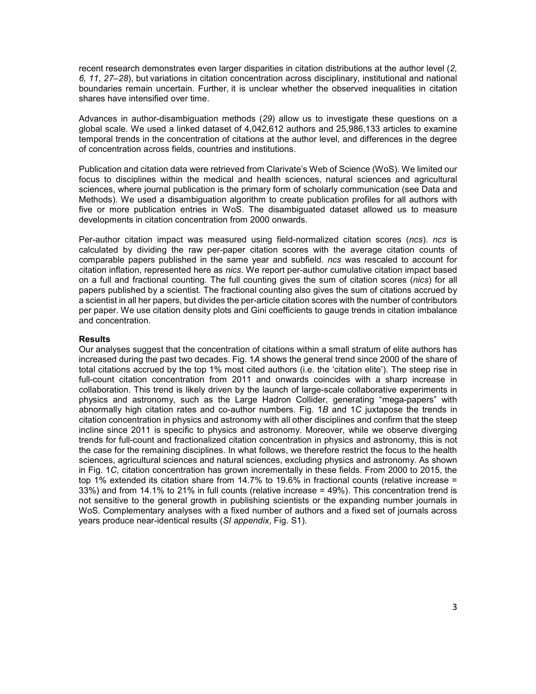

저자: Mathias Wullum Nielsen, Jens Peter Andersen | 날짜: 2021 | Journal: Proceedings of the National Academy of Sciences | DOI: 10.1073/pnas.2012208118 | arXiv: -

Figure 1
과학에서 피인용 불평등은 증가하고 있는가, 감소하고 있는가? 이 논문은 400만 명의 저자와 2,600만 편의 논문 데이터를 분석하여 상위 1%의 최다 인용 과학자들이 전체 인용의 점유율을 2000~2015년 동안 14%에서 21%로 확대했음을 밝혔다. Gini 계수도 0.65에서 0.70으로 상승했다. 불평등은 자연과학, 의학, 농업과학 전반에서 증가하고 있으며, 엘리트 과학자들이 더 많은 협력과 출판을 통해 격차를 벌이고 있다.
Figure 1
Figure 1: 2000~2015년 과학자 인용 점유율 분포 변화 — 상위 1%의 점유율 증가와 Gini 계수 상승
인용 불평등 증가는 Matthew 효과의 심화를 나타내며, 과학 생태계에서 소수 엘리트 집중과 다양성 감소를 의미한다. 이는 연구비 배분, 대학 순위, 학문 공동체의 형평성 논의에 직접적 함의를 갖는다.
| 항목 | 점수 |
|---|---|
| Novelty | 4/5 |
| Technical Soundness | 4/5 |
| Significance | 4/5 |
| Clarity | 4/5 |
| Overall | 4/5 |
총평: 과학계 인용 불평등의 장기적 심화를 처음으로 대규모 종단 분석으로 실증한 연구로, 과학 생태계의 구조적 불평등 논의에 중요한 실증적 기반을 제공한다.